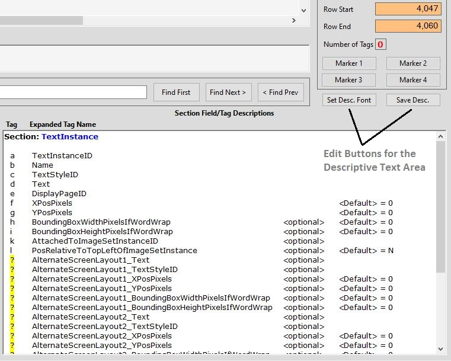

AECHO V2 Help - Making Custom Mods to Section Descriptions
<Return to Help's Home Page>
AECHO installs an extensive set of descriptive text for the 44
standard ODF Sections, plus other non-Section content areas: this
text reflects the ODF specification current as of Hauptwerk V6.x,
documenting all known Fields for all Sections, both their short and
long-form Field-Tags, default values, and obsolete Tags. This
content may be modified by the user i.e. custom notes may be made
and saved.
Note that care must be taken if modifying this content: presently,
AECHO makes no attempt to identify and protect custom modifications,
and a subsequent installation, re-installation, or update to AECHO
will overwrite any user mods, without warning. A future release of
AECHO may help protect user content.
AECHO stores its Section descriptions in discrete RTF files, one for
each Section. The files are named the same as their related Section
i.e., the descriptive text file for the Section TextInstance is
"TextInstance.rtf". The location of these files depends on the type
of AECHO installation:
- Non-installed AECHO: AECHO was not installed by the system,
but was simply extracted from a compressed distribution file. In
this installation, AECHO's descriptive files are in the
directory "\DATA\", located in the same directory/folder as
AECHO's executable. For example, if the executable is
"C:\Somewhere\AECHO\AECHO.exe", then the descriptive files will
be in "C:\Somewhere\AECHO\DATA\". Saved user mods are written
back to these data files, overwriting their original content,
which are in turn subject to being overwritten if AECHO is
redeployed into the same directory.
- Installed AECHO, "Just Me" mode: this is the default
installation type when AECHO is installed by running its
setup.exe or AECHOInstaller.msi installer program. In this
version of an installation, there is a single copy of the data
files, located in the installing user's Roaming AppData
directory. This location varies somewhat by operating system
version. For Windows10, it is
"C:\Users\Username\AppData\Roaming\AECHO\DATA\".
When AECHO is uninstalled, the sub-directory \AECHO\ and all its
content is deleted, which would also delete any user-made
modification, if precautions outside of AECHO have not been
taken. A re-installation of AECHO will overwrite the directory,
also deleting any user mods as it refreshes the data files.
- Installed AECHO, "Everyone" mode: this is an option when
installing AECHO from its setup.exe or AECHOInstaller.msi
program. In this type of installation, every user gets their own
private copy of the data. The system stores a baseline copy in a
hidden system area, and immediately installs an instance of that
data in the installing-user's Roaming AppData directory, in the
same place as a "Just Me" installation. Any modifications made
by the installing user are to this local copy, not affecting
other users, or the baseline. For other users, the first time
they run AECHO, the system will install a personal copy of the
data, taken from the baseline, into that user's Roaming AppData
directory. Any changes they make to the data will only be
written to their private copy. If a new instance of AECHO is
installed on the system, it will: update the baseline data to
its refreshed version; overwrite the installing user's personal
copy of the data immediately; overwrite each non-installing
user's data when they first run the newly installed version of
AECHO.
If a user wishes to make changes to a descriptive file, they can
easily do so regardless of the type of AECHO installation. There
are two buttons on the AECHO main form to assist in this:
- Set
Desc. Font - this button sets all text
in the currently displayed Descriptive Text Area
to AECHO's standard font-face (Verdana) and size (10 points.)
All other formatting is preserved, such as coloration and
text-styling. This command is useful if importing content from
another source and it doesn't match existing text.
- Save
Desc. - this button saves the current
contents of the Descriptive Text Area back to
its source data file, overwriting the older content. Until
saved, all changes are provisional, and may be easily (or
accidentally!) discarded, as seen below.

|
Descriptive Test Area
- Editing Buttons
|
AECHO overwrites the contents of the Descriptive Text Area
when navigating in a way that updates the current Section e.g.
double-clicking in the ODF Display Area or using a Menu-Bar
Section
navigation choice, and that Section's content is not already on
display. If the current Section changes for any reason, then the
text content is always taken anew from the underlying Section data
file. Usually, when staying in the same Section, the content is
not refreshed, as it will already be on display. But not always,
as the user may have issued a List Sections
command, causing different information to take over the Descriptive
Text Area, without having changed the
current Section. The next ODF double-click in the same Section
will cause AECHO to refresh the descriptive text, as it knows that
the correct content is not on display.
If a user wishes to discard all changes made to a Section
Description, but not yet saved, simply positioning to another
Section will serve. Note that AECHO provides no warning that it is
discarding unsaved changes.
At this time, there is no "undo" command. Modifications may be
removed entirely (see the prior comment), or manually.
The procedure to change a Section's descriptive text is:
- Navigate to the desired Section by either double-clicking on
its content, or choosing it from the Menu-Bar.
This loads the current description into the Descriptive
Text Area.
- (Optional) Backup the current content by selecting the entire
area, Ctrl+C to copy the formatted content, and then paste it
into any RTF-aware program and save it from there into a file
for safe-keeping.
- Make desired alterations to the content, begin careful not to
change Sections until after you have saved your new content. New
content can be directly typed into the Descriptive Text Area,
or pasted in from other sources, such as prepared text
maintained in an external, RTF-aware text editor.
- If the content is now what you want, commit it back to its
underlying file by clicking on the Save Desc.
button; if not, you can discard it by simply navigating to a
different Section.